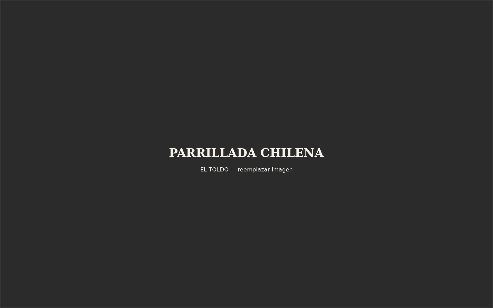
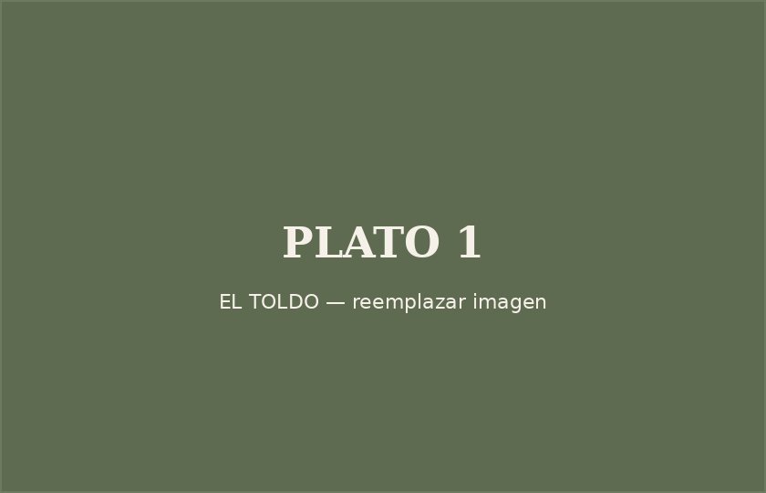
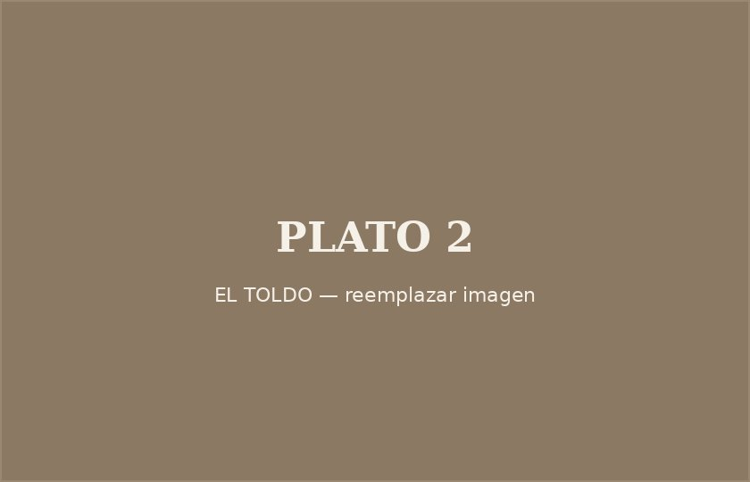
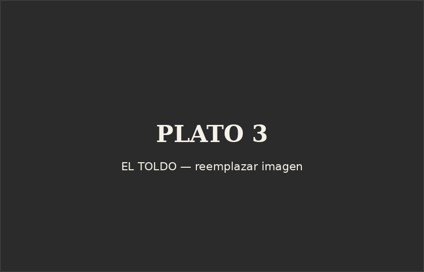
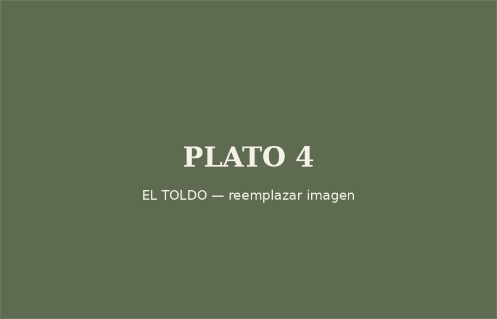
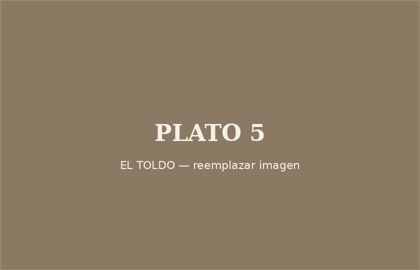
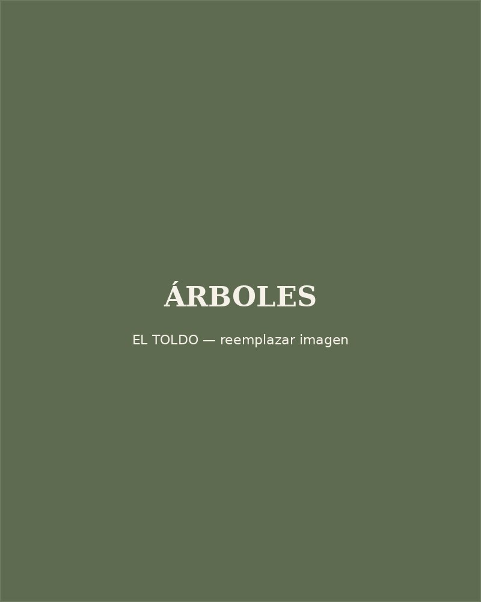
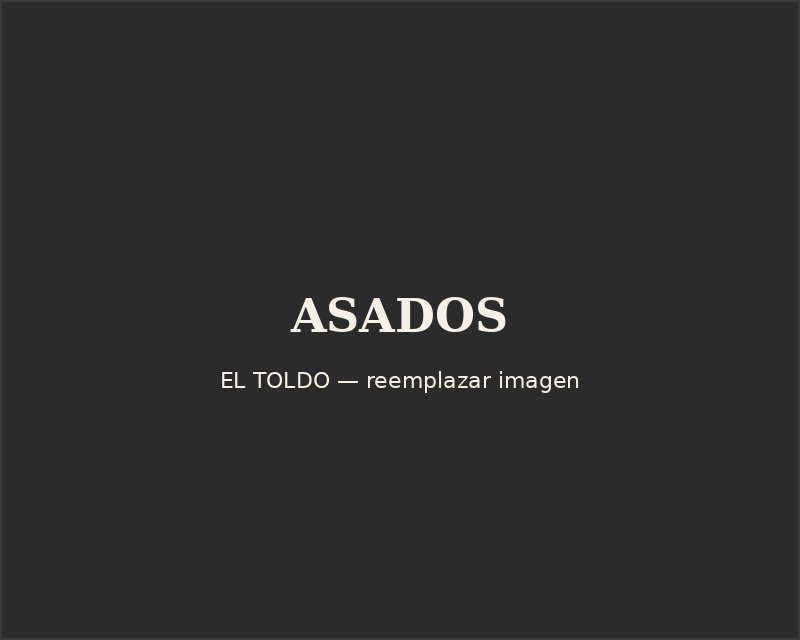
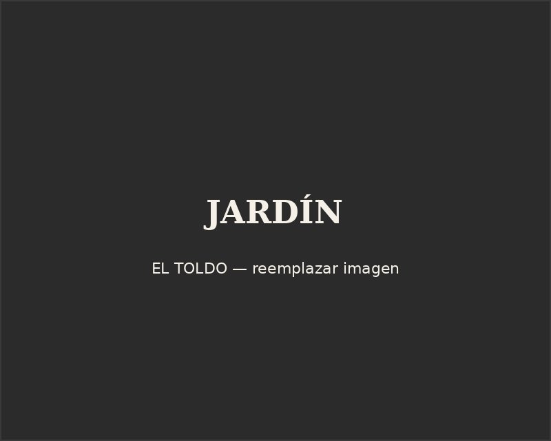

Pan Amasado con Pebre
Pan amasado casero recién horneado, acompañado de pebre chileno tradicional.
Consultar precio
Consultar

Parrilladas y Cocina Tradicional Chilena — Tradición chilena, sabores inolvidables.







La historia de El Toldo comenzó en marzo de 1984 como un pequeño local de comida al paso para viajeros de la carretera. Con el paso de los años fue creciendo hasta convertirse en uno de los restaurantes tradicionales más reconocidos de San Bernardo. En 1991 un incendio destruyó completamente el restaurante. Gracias al esfuerzo de la familia García Melín, amigos y clientes, El Toldo renació más grande y con un nuevo objetivo: ofrecer un lugar único donde disfrutar en familia rodeado de naturaleza. En 2018 adopta el nombre Parrilladas El Toldo, manteniendo la tradición que lo caracteriza hasta el día de hoy.
Un vistazo a nuestros platos, nuestra terraza y el entorno natural que nos rodea.



Desde 1984 manteniendo viva la cocina chilena de siempre.
Recetas familiares transmitidas por generaciones.
Cortes seleccionados, cocinados al punto justo.
Ingredientes frescos y de estación.
Horneado en casa, todos los días.
Un espacio pensado para disfrutar en familia.
Jardines y terraza rodeados de naturaleza.
La tranquilidad del campo, cerca de la ciudad.
"Platos abundantes, excelente pastel de choclo y una cazuela espectacular. Muy recomendable."
Cristian Brotfeld"Excelente atención y comida deliciosa. Muy buena experiencia."
Fabian Jara"La atención del garzón fue excelente y la comida realmente representa la tradición chilena."
Jair Torres FernándezCompleta el formulario y nuestro equipo confirmará tu reserva a la brevedad. También puedes reservar directo por WhatsApp.
Reservar por WhatsApp